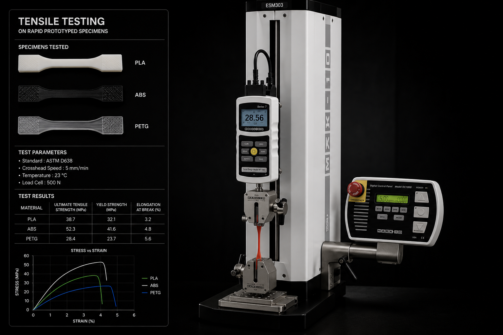

Testing
Testing happens twice, and the distinction matters. First on prototypes, to find out whether the design works. Then on devices built on the production line, because only those results can support a submission.
Find the failure while it is still cheap
Bench-top work on printed and pilot parts, run alongside the design loop. Nothing here goes in a submission — the purpose is to break the design early, in the lab, where a change costs a print rather than a tooling revision.

{{ p.title }}
- {{ i }}
Formal verification and validation can only be run on devices made by the validated process, with production tooling and production materials. Everything before that is engineering evidence, not submission evidence.
Evidence that goes in the file
Run on production-equivalent units once the line is validated. These are the reports that support the technical file and the submission — executed to protocol, with acceptance criteria written before the first sample is tested.
{{ t.title }}
{{ t.desc }}
Manufacture
Tooling, cleanroom assembly and a validated line — the process that produces the units the formal testing is run on.